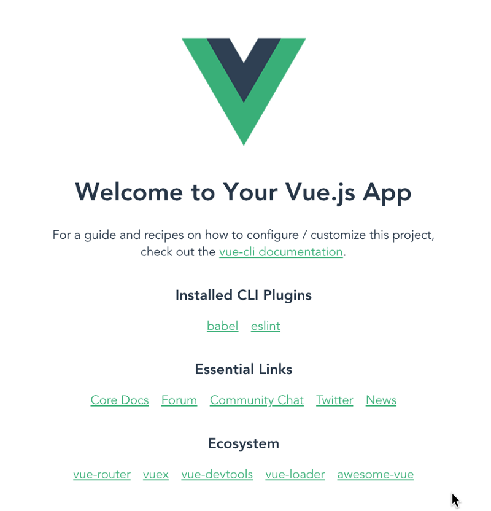

Vue is a modern JavaScript framework that provides useful facilities for progressive enhancement — unlike many other frameworks, you can use Vue to enhance existing HTML. This lets you use Vue as a drop-in replacement for a library like jQuery.
That being said, you can also use Vue to write entire Single Page Applications (SPAs). This allows you to create markup managed entirely by Vue, which can improve developer experience and performance when dealing with complex applications. It also allows you to take advantage of libraries for client-side routing and state management when you need to. Additionally, Vue takes a "middle ground" approach to tooling like client-side routing and state management. While the Vue core team maintains suggested libraries for these functions, they are not directly bundled into Vue. This allows you to select a different routing/state management library if they better fit your application.
In addition to allowing you to progressively integrate Vue into your applications, Vue also provides a progressive approach to writing markup. Like most frameworks, Vue lets you create reusable blocks of markup via components. Most of the time, Vue components are written using a special HTML template syntax. When you need more control than the HTML syntax allows, you can write JSX or plain JavaScript functions to define your components.
To use Vue in an existing site, you can drop one of the following elements onto a page. This allows you to start using Vue on existing sites, which is why Vue prides itself on being a progressive framework. This is a great option when migrating an existing project using a library like jQuery to Vue. With this method, you can use a lot of the core features of Vue, such as the attributes, custom components, and data-management.
-
Development Script (Unoptimized, but includes console warnings. Great for development.)
<script src='https://cdn.jsdelivr.net/npm/vue/dist/vue.js'></script> -
Production Script (Optimized version, minimal console warnings. It is recommended that you specify a version number when including Vue on your site so that any framework updates do not break your live site without you knowing.)
<script src='https://cdn.jsdelivr.net/npm/vue@2'></script>
However, this approach has some limitations. To build more complex apps, you'll want to use the Vue NPM package. This will let you use advanced features of Vue and take advantage of bundlers like WebPack. To make building apps with Vue easier, there is a CLI to streamline the development process. To use the npm package & the CLI you will need:
-
Node.js 8.11+ installed.
-
npm or yarn.
To install the CLI, run the following command in your terminal:
npm install --global @vue/cli
Or if you'd prefer to use yarn:
yarn global add @vue/cli
Once installed, to initialize a new project you can then open a terminal in the directory you want to create the project in, and run vue create
We'll look at using this below.
To explore various features of Vue, we will be building up a sample todo list app. We'll begin by using the Vue CLI to create a new app framework to build our app into. Follow the steps below:
-
In terminal, cd to where you'd like to create your sample app, then run vue create moz-todo-vue.
-
Use the arrow keys and Enter to select the "Manually select features" option.
-
The first menu you'll be presented with allows you to choose which features you want to include in your project. Make sure that "Babel" and "Linter / Formatter" are selected. If they are not, use the arrow keys and the space bar to toggle them on. Once they are selected, press Enter to proceed.
-
Next, you'll select a config for the linter / formatter. Navigate to "ESLint with error prevention only" and hit Enter again. This will help us catch common errors, but not be overly opinionated.
-
Next, you are asked to configure what kind of automated linting we want. Select "Lint on save". This will check for errors when we save a file inside the project. Hit Enter to continue.
-
Now, you will select how we want your config files to be managed. "In dedicated config files" will put your config settings for things like ESLint into their own, dedicated files. The other option, "In package.json", will put all of your config settings into the app's package.json file. Select "In dedicated config files" and push Enter .
-
Finally, you are asked if you want to save this as a preset for future options. This is entirely up to you. If you like these settings over the existing presets and want to use them again, type y , otherwise type n .
If everything went successfully, the CLI should have created a series of files and directories for your project. The most significant ones are as follows:
-
.eslintrc.js: This is a config file for ESLint. You can use this to manage your linting rules. -
.eslintrc.js: This is the config file for Babel, which transforms modern JavaScript features being used in development code into older syntax that is more cross-browser compatible in production code. You can register additional babel plugins in this file. -
.eslintrc.js: This is a config for Browserslist. You can use this to control which browsers your tooling optimizes for. -
.eslintrc.js: This directory contains static assets that are published, but not processed by Webpack during build (with one exception; index.html gets some processing).-
: This is the favicon for your app. Currently, it's the Vue logo. -
: index.html: This is the template for your app. Your Vue app is run from this HTML page, and you can use lodash template syntax to interpolate values into it.
-
-
.src: This directory contains the core of your Vue app.-
main.js: this is the entry point to your application. Currently, this file initializes your Vue application and signifies which HTML element in the index.html file your app should be attached to. This file is often where you register global components or additional Vue libraries. -
App.vue: this is the top-level component in your Vue app. See below for more explanation of Vue components. -
components: this directory is where you keep your components. Currently, it just has one example component. -
assets: this directory is for storing static assets like CSS and images. Because these files are in the source directory, they can be processed by Webpack. This means you can use pre-processors like Sass/SCSS or Stylus.
-
The Vue CLI comes with a built-in development server. This allows you to run your app locally so you can test it easily without needing to configure a server yourself. The CLI adds a serve command to the project's package.json file as an npm script, so you can easily run it.
In your terminal, try running npm run serve (or yarn serve if you prefer yarn). Your terminal should output something like the following:
INFO Starting development server...
98% after emitting CopyPlugin
DONE Compiled successfully in 18121ms
App running at:
- Local: < http://localhost:8080/>
- Network: < http://192.168.1.9:8080/>
Note that the development build is not optimized.
To create a production build, run npm run build.
If you navigate to the "local" address in a new browser tab (this should be something like http://localhost:8080 as stated above, but may vary based on your setup), you should see your app. Right now, it should contain a welcome message, a link to the Vue documentation, links to the plugins you added when you initialized the app with your CLI, and some other useful links to the Vue community and ecosystem.

Let's make our first change to the app — we'll delete the Vue logo. Open the App.vue file, and delete the element from the template section:
<img alt="Vue logo" src="./assets/logo.png">
Copy to Clipboard If your server is still running, you should see the logo removed from the rendered site almost instantly. Let's also remove the HelloWorld component from our template.
First of all delete this line:
<
HelloWorld msg="Welcome to Your Vue.js App"/>
If you save your App.vue file now, the rendered app will throw an error because we've registered the component but are not using it. We also need to remove the lines from inside the element that import and register the component:
Delete these lines now:
import HelloWorld from './components/HelloWorld.vue'
components: {
HelloWorld
}
Your rendered app should no longer show an error, just a blank page, as we currently have no visible content inside
< template>
Let's add a new <h1> inside < div id="app">. Since we're going to be creating a todo list app below, let's set our header text to "To-Do List". Add it like so:
< template>
< div id="app">
< h1>To-Do List </h1>
< /div>
</template>
Let's leave this here for now. We've learnt about some of the ideas behind Vue, created some scaffolding for our example app to live inside, inspected it, and made a few preliminary changes.
With a basic introduction out of the way, we'll now go further and build up our sample app, a basic Todo list application that allows us to store a list of items, check them off when done, and filter the list by all, complete, and incomplete todos.
In the next article we'll build our first custom component, and look at some important concepts such as passing props into it and saving its data state.